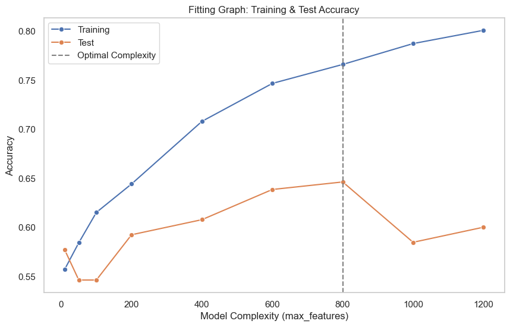

import numpy as npimport pandas as pdimport seaborn as snsimport calendarimport matplotlib.pyplot as pltimport yfinance as yfimport refrom nltk.tokenize import word_tokenizefrom collections import Counterimport nltkfrom nltk.corpus import stopwordsfrom sklearn.feature_extraction.text import TfidfVectorizerfrom sklearn.model_selection import train_test_splitfrom sklearn.linear_model import LogisticRegressionfrom sklearn.metrics import classification_report, accuracy_scoresns.set_theme(style="whitegrid")
Exploratory Data Analysis
News Datasets
The three news datasets are obtained through Kaggle. The author mentioned these data are scraped from CNBC, the Guardian, and Reuters official websites, the headlines in these datasets reflects the overview of the U.S. economy and stock market every day for the past year to 2 years.
The Timeframes of data:
Data scraped from CNBC contains the headlines, last updated date, and the preview text of articles from the end of December 2017 to July 19th, 2020.
Data scraped from the Guardian Business contains the headlines and last updated date of articles from the end of December 2017 to July 19th, 2020 since the Guardian Business does not offer preview text.
Data scraped from Reuters contains the headlines, last updated date, and the preview text of articles from the end of March 2018 to July 19th, 2020.
Code
cnbc_data = pd.read_csv('dataset/cnbc_headlines.csv')# There is ,, empty lines in CNBC, drop themcnbc_data.dropna(subset=['Time'],inplace=True)guardian_data = pd.read_csv('dataset/guardian_headlines.csv')reuters_data = pd.read_csv('dataset/reuters_headlines.csv')
Code
dfs = [cnbc_data, guardian_data, reuters_data]df_names = ['CNBC', 'Guardian', 'Reuters']non_null_counts = [df.dropna().shape[0] for df in dfs]plt.figure(figsize=(5, 5))plt.bar(df_names, non_null_counts)plt.title("Number of Non-Null Entries in DataFrames")plt.xlabel("DataFrames")plt.ylabel("Non-Null Count")plt.show()
We can see here that all of the news datasets have varying numbers of data points ranging from 2800 to 32700. This will not be a problem for us since our question focuses on the impact of news headlines in general on the S&P 500, so all of this data will be combined in to a larger dataset ordered by the date of the headline. We can also see there is null data within the CNBC dataset which will be removed.
These histograms display the number of headlines given a specific length. Disregarding the bar at length of 0 in the CNBC graph due to the null data, headlines from all three stations seem to center around 60-70 words with the max being ~100 for CNBC and Reuters, and ~120 for the Guardian.
Headline Distribution
To find out the distribution of headlines throughout the time frame, we generated a graph with headlines colored differently in each month of the year.
Code
# Extra cleaning for CNBCcnbc_data['Time'] = ( cnbc_data['Time'] .str.replace(r"ET", "", regex=True) .str.strip() .str.replace(r"\s+", " ", regex=True))
Code
cnbc_data['Time'] = pd.to_datetime( cnbc_data['Time'], format="mixed", errors='coerce')# For GUARDIANguardian_data['Time'] = pd.to_datetime( guardian_data['Time'], format='%d-%b-%y', errors='coerce')# For REUTERSreuters_data['Time'] = pd.to_datetime( reuters_data['Time'], format='%b %d %Y', errors='coerce')# Adding additional columns for time analysisfor df in [cnbc_data, guardian_data, reuters_data]:# Extract date parts for time-based analysis df['Year'] = df['Time'].dt.year df['Month'] = df['Time'].dt.month# Frequency of headlines by year and month for each datasetcnbc_yearly_counts = cnbc_data.groupby(['Year', 'Month']).size().unstack(fill_value=0)guardian_yearly_counts = guardian_data.groupby(['Year', 'Month']).size().unstack(fill_value=0)reuters_yearly_counts = reuters_data.groupby(['Year', 'Month']).size().unstack(fill_value=0)
Code
fig, ax = plt.subplots(3, 1, figsize=(14, 12), sharex=True)# Set a colormap to represent months consistentlymonth_colors = plt.colormaps["tab20"]# CNBC dataset with month colorscnbc_yearly_counts.plot(kind="bar", stacked=True, ax=ax[0], color=[month_colors(i) for i inrange(12)], legend=False)ax[0].set_title("CNBC Headlines Frequency by Year and Month")ax[0].set_ylabel("Number of Headlines")# Guardian dataset with month colorsguardian_yearly_counts.plot(kind="bar", stacked=True, ax=ax[1], color=[month_colors(i) for i inrange(12)], legend=False)ax[1].set_title("Guardian Headlines Frequency by Year and Month")ax[1].set_ylabel("Number of Headlines")# Reuters dataset with month colorsreuters_yearly_counts.plot(kind="bar", stacked=True, ax=ax[2], color=[month_colors(i) for i inrange(12)], legend=False)ax[2].set_title("Reuters Headlines Frequency by Year and Month")ax[2].set_ylabel("Number of Headlines")ax[2].set_xlabel("Year")# Adding a single legend for the monthsmonth_names = [calendar.month_name[i] for i inrange(1, 13)]fig.legend(month_names, loc="upper right", title="Months")plt.tight_layout(rect=[0, 0, 0.85, 1]) # Adjust layout to fit the legendplt.show()
These graphs depict the number of headlines per month per year. With this, we can see that the earlier months of the year seem to have a higher concentration of headlines.
Code
for df in [cnbc_data, guardian_data, reuters_data]: df.drop(columns=['Year','Month'],inplace=True)
Word Frequency
A short analysis on word frequency. We used the stopword dictionary in nltk to help filtering out words like a and the.
[nltk_data] Downloading package stopwords to
[nltk_data] C:\Users\Aaron\AppData\Roaming\nltk_data...
[nltk_data] Package stopwords is already up-to-date!
Code
# Function to clean and process headlines for meaningful word frequenciesdef process_and_plot(data, title, start=0, end=15, stopwords=None): stopwords = stop_words combined_string =' '.join(data['Headlines']) # Combine all headlines word_list = combined_string.split() # Split into words word_list = [word.lower().strip(",.!?()[]") for word in word_list if word.lower() notin stopwords]# Calculate word frequencies word_count = Counter(word_list)# Sort words by frequency sorted_words = word_count.most_common() # Sort by frequency top_words = sorted_words[start:end] # Select words from the specified range# Create lists of words and their counts words = [word for word, count in top_words] counts = [count for word, count in top_words]# Plot the bar chart plt.figure(figsize=(10, 4)) sns.barplot(x=counts, y=words,hue=words, palette="Blues_d", orient="h") plt.xlabel('Counts') plt.ylabel('Words') plt.title(title) plt.tight_layout() plt.show()# Plot for each dataset excluding common stopwordsprocess_and_plot(guardian_data, 'Guardian: Top 15 Meaningful Words Frequency')process_and_plot(cnbc_data, 'CNBC: Top 15 Meaningful Words Frequency')process_and_plot(reuters_data, 'Reuters: Top 15 Meaningful Words')
Most of the words are meaningful, but who is cramer in the CNBC dataset? Turns out Jim Cramer is the host of various financial programs in CNBC. We will prune him out from the CNBC dataset later.
[*********************100%%**********************] 1 of 1 completed
Statistical Analysis
Code
data_hlcv.describe()
High
Low
Close
Volume
count
669.000000
669.000000
669.000000
6.690000e+02
mean
2883.568308
2849.033738
2867.277964
3.965081e+09
std
198.117998
206.057495
202.285824
1.154337e+09
min
2300.729980
2191.860107
2237.399902
1.296530e+09
25%
2739.189941
2709.540039
2724.439941
3.300220e+09
50%
2856.669922
2825.389893
2843.489990
3.635780e+09
75%
2999.149902
2970.090088
2984.870117
4.156640e+09
max
3393.520020
3378.830078
3386.149902
9.053950e+09
The S&P 500 dataset from December 1, 2017, to July 31, 2020, contains 669 daily records with columns for High, Low, Close, and Volume, with no missing values. The average ‘High’, ‘Low’, and ‘Close’ prices are around 2883, 2849, and 2867, respectively, with standard deviations near 200 points, indicating moderate volatility. The ‘Volume’ data, averaging 3.97 billion shares, shows considerable variability, ranging from 1.3 billion to 9.05 billion, reflecting spikes in trading activity during certain market events.
To prepare for analysis, normalization or standardization may be beneficial to handle the scale differences, particularly between price and volume data. This initial overview confirms a relatively stable daily distribution, setting up further analysis on trends, volatility, and potential event impacts on S&P 500 performance.
This is the stock price of the S&P 500 over min and max dates covered by the news headlines. Some noticeable features that are included in this graph is the large dip during early 2020 caused by covid. This will have an interesting impact on our model since the news did play a big role in the scare factor for COVID-19, but the fact that it was caused by a global epidemic may skew the embeddings of other words.
Data Preprocessing
Clean out NaT values in Time column of three datasets.
Here we did our first cleaning by converting all characters to lower case, and remove extra spaces, quotation marks and other unwanted ones. We are also removing JimCramer, as well as his show Mad Money from the CNBC dataset.
Code
def clean_headlines(text):# Convert text to lowercase text = text.lower()# Remove special characters except hyphens and spaces text = re.sub(r"[^\w\s\-]", "", text) words = word_tokenize(text) cleaned_text =" ".join(words)return cleaned_textguardian_data['Headlines'] = guardian_data['Headlines'].apply(clean_headlines)cnbc_data['Headlines'] = cnbc_data['Headlines'].apply(clean_headlines)cnbc_data['Description'] = cnbc_data['Description'].apply(clean_headlines)reuters_data['Headlines'] = reuters_data['Headlines'].apply(clean_headlines)reuters_data['Description'] = reuters_data['Description'].apply(clean_headlines)def remove_jim(text): words_to_remove = ['jim', 'cramer', 'mad money'] pattern =r'\b('+'|'.join(words_to_remove) +r')\b' cleaned = re.sub(pattern, '', text, flags=re.IGNORECASE) cleaned = re.sub(r'\s+', ' ', cleaned).strip()return cleanedcnbc_data['Headlines'] = cnbc_data['Headlines'].apply(remove_jim)cnbc_data['Description'] = cnbc_data['Description'].apply(remove_jim)cnbc_data.head()
Headlines
Time
Description
0
a better way to invest in the covid-19 vaccine...
2020-07-17 19:51:00
host recommended buying four companies that ar...
1
cramers lightning round i would own teradyne
2020-07-17 19:33:00
host rings the lightning round bell which mean...
3
cramers week ahead big week for earnings even ...
2020-07-17 19:25:00
well pay more for the earnings of the non-covi...
4
iq capital ceo keith bliss says tech and healt...
2020-07-17 16:24:00
keith bliss iq capital ceo joins closing bell ...
5
wall street delivered the kind of pullback ive...
2020-07-16 19:36:00
look for the stocks of high-quality companies ...
Add Prediction Target
Since our goal is to relate news outlets with S&P500, part of our project will be focusing on the trend prediction of future S&P 500 price change. Which we created a binary column trend_up which will be True if the price current trading date is lower than tomorrow’s.
Code
stock_data = data_hlcv.reset_index()[['Date', 'Close']]# Flatten the column headers if they are multi-levelstock_data.columns = stock_data.columns.map(lambda x: x[1] ifisinstance(x, tuple) else x)stock_data.rename(columns={stock_data.columns[0]: 'Date', stock_data.columns[1]: 'Close'}, inplace=True)stock_data['trend_up'] = stock_data['Close'].shift(-1) > stock_data['Close']stock_data.head()
Date
Close
trend_up
0
2017-12-01
2642.219971
False
1
2017-12-04
2639.439941
False
2
2017-12-05
2629.570068
False
3
2017-12-06
2629.270020
True
4
2017-12-07
2636.979980
True
We also want to make sure that the proportion True and False are balanced.
For our first model, we will ignore temporal relationship by treating every news as an independent datapoint. We merged all datasets into one, along with the prediction target.
# Preprocess the text - clean the headlinesdef preprocess_text(text): text = text.lower() text = re.sub(r'\W', ' ', text) # remove non-word characters text = re.sub(r'\s+', ' ', text) # remove extra spacesreturn text.strip()final_dataset['cleaned_headlines'] = final_dataset['Headlines'].apply(preprocess_text)# Tokenize - Create a vocabulary (word to integer mapping)all_words =' '.join(final_dataset['cleaned_headlines']).split()vocab = {word: idx +1for idx, word inenumerate(set(all_words))} # map words to unique integers# Tokenize the dataset - convert each word in a headline to its corresponding integerdef tokenize(text, vocab):return [vocab[word] for word in text.split() if word in vocab]final_dataset['tokenized_headlines'] = final_dataset['cleaned_headlines'].apply(lambda x: tokenize(x, vocab))final_dataset[['Headlines', 'tokenized_headlines']].head()
Code
embedding_size =50embedding_matrix = {}for word, idx in vocab.items(): embedding_matrix[word] = np.random.randn(embedding_size) # Random vector for each wordembedding_df = pd.DataFrame.from_dict(embedding_matrix, orient='index')embedding_df.head()
Base Models
Classification Models
We are using logistic regression with TF-IDF features as our base model.
Individual Headline Model
For this model, we are treating every news are individual data points. This is guarantee to fail because there is way to little information contained in a single news title, and there will be too much noise.
Code
data = first_model_data[['Headlines', 'trend_up']].copy()vectorizer = TfidfVectorizer(max_features=300) X = vectorizer.fit_transform(data['Headlines']).toarray()y = data['trend_up']X_train, X_test, y_train, y_test = train_test_split(X, y, test_size=0.2, random_state=42)model = LogisticRegression(random_state=42, max_iter=1500)model.fit(X_train, y_train)y_pred_test = model.predict(X_test)y_pred_train = model.predict(X_train)train_accuracy = accuracy_score(y_train, y_pred_train)test_accuracy = accuracy_score(y_test, y_pred_test)# Display resultsprint("Test Accuracy:", test_accuracy)print("Train Accuracy:", train_accuracy)print("Report on test dataset:")pd.DataFrame(classification_report(y_test, y_pred_test, output_dict=True)).transpose()
Test Accuracy: 0.5488204802708135
Train Accuracy: 0.5665661694700095
Report on test dataset:
precision
recall
f1-score
support
False
0.471958
0.105888
0.172969
4212.00000
True
0.557358
0.904789
0.689796
5241.00000
accuracy
0.548820
0.548820
0.548820
0.54882
macro avg
0.514658
0.505339
0.431382
9453.00000
weighted avg
0.519306
0.548820
0.459512
9453.00000
Joint Headline Model
By joining all headlines of the same day in to one sentence, we hope that TF-IDF could capture more information than our previous model.
Test Accuracy: 0.5923076923076923
Train Accuracy: 0.6441005802707931
Report on test dataset:
precision
recall
f1-score
support
False
0.526316
0.185185
0.273973
54.000000
True
0.603604
0.881579
0.716578
76.000000
accuracy
0.592308
0.592308
0.592308
0.592308
macro avg
0.564960
0.533382
0.495275
130.000000
weighted avg
0.571499
0.592308
0.532726
130.000000
We also experimented in the amount of features TF-IDF should have in order to have the best performance.
Code
complexities = [10, 50, 100, 200, 400, 600, 800, 1000, 1200]# Lists to store accuraciestrain_accuracies = []test_accuracies = []for max_features in complexities: vectorizer = TfidfVectorizer(max_features=max_features) X = vectorizer.fit_transform(data['Headlines']).toarray() y = data['trend_up'] X_train, X_test, y_train, y_test = train_test_split(X, y, test_size=0.2, random_state=42) model = LogisticRegression(random_state=42, max_iter=1500) model.fit(X_train, y_train) train_accuracy = accuracy_score(y_train, model.predict(X_train)) test_accuracy = accuracy_score(y_test, model.predict(X_test)) train_accuracies.append(train_accuracy) test_accuracies.append(test_accuracy)plot_data = pd.DataFrame({'Complexity': complexities *2,'Accuracy': train_accuracies + test_accuracies,'Type': ['Training'] *len(complexities) + ['Test'] *len(complexities)})plt.figure(figsize=(10, 6))sns.lineplot(data=plot_data, x='Complexity', y='Accuracy', hue='Type', marker='o')plt.axvline(x=complexities[np.argmax(test_accuracies)], linestyle='--', color='gray', label="Optimal Complexity")plt.title("Fitting Graph: Training & Test Accuracy")plt.xlabel("Model Complexity (max_features)")plt.ylabel("Accuracy")plt.legend()plt.grid()plt.show()

As expected, we do not need to high complexity for TF-IDF, as increasing it will overfit our training dataset. A complexity around 800 yields the best result on the test set with accuracy about 65%.